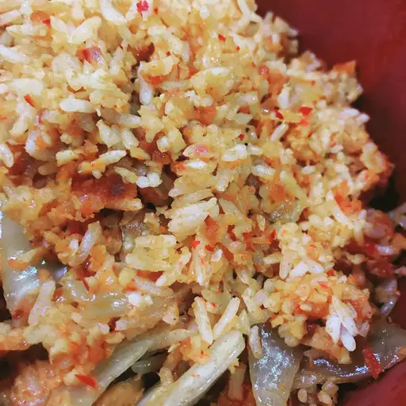

Kimchi Fried Rice

Description
Kimchi fried rice is a popular Korean dish that is easy and convenient to make on the get-go.
Ingredients
- 1 tbsp Canola oil
- 1/4 cup ground beef
- 1 green onion, sliced, white & green parts separated
- 1 cup well-fermented kimchi, drained & chopped
- 1 tbsp gochujang
- 3 cups of cooked short-grained rice
- 1 tsp butter
- 1 egg
Steps
- Heat oil in non-stick pan over high heat. Add ground beef & white part of onion and reduce heat to medium. Stir beef & onion until cooked for 1-2 minutes.
- Stir kimchi and gochujang into the above mixture for 2-4 minutes. Add rice and cook until heated for 3-5 minutes.
- Drizzle sesame oil over mixture and stir to coat. Garnish with green part of onion.
- Melt butter and fry egg over medium-high heat for 3-4 minutes. Place egg over fried rice.